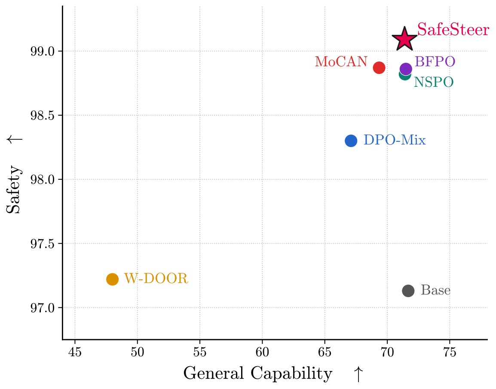
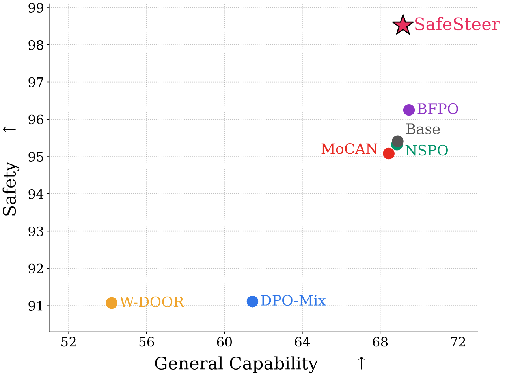
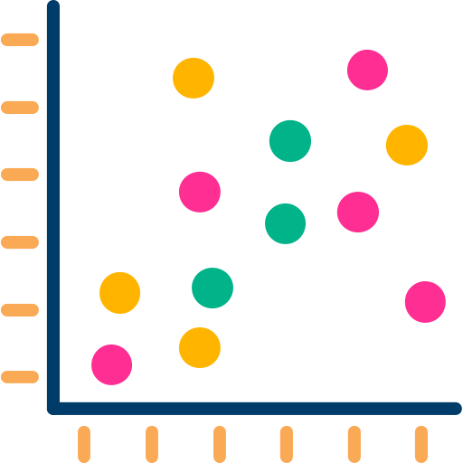
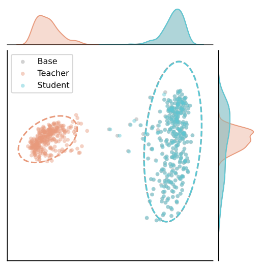
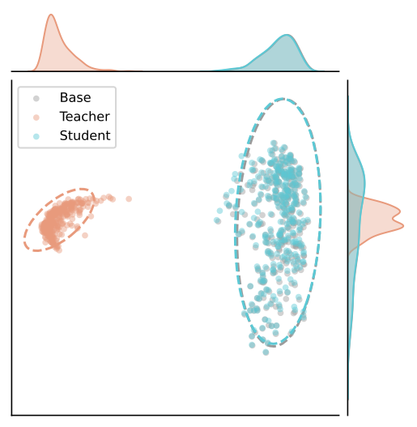
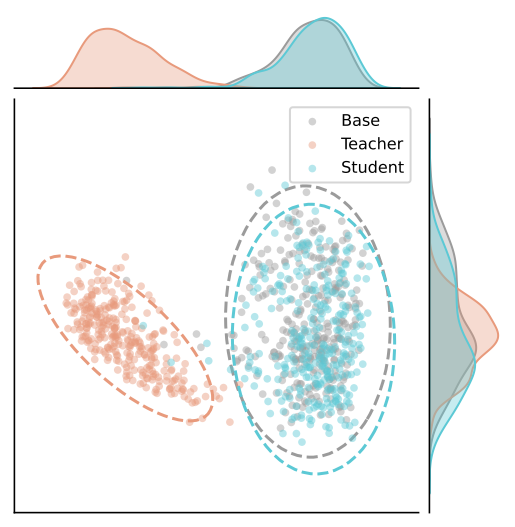
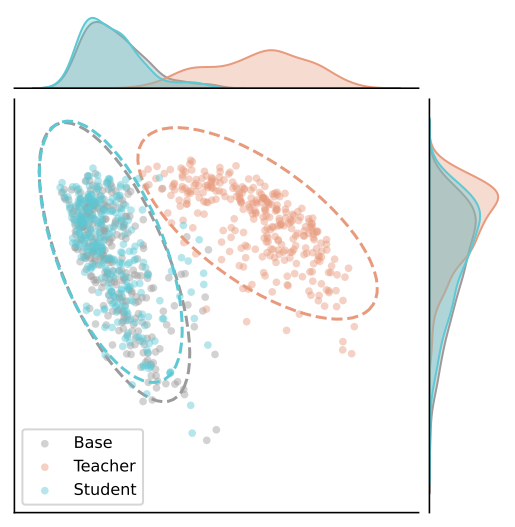

Highlights
Highlights
Overall Performance


Safety–Capability Trade-off of SafeSteer on the Qwen family. Each point is a method, with the gray point marking the base model. Across both Qwen3-4B-Instruct and Qwen2.5-7B-Instruct, SafeSteer (red star, top-right) achieves the highest safety score while preserving general capability, dominating all baselines.

General Representation Shift




Although activation steering induces a severe representation shift in the safety teacher πt, the student πs trained by SafeSteer remains virtually identical to the base model π0 in the general-capability space — the two distributions overlap almost entirely, and the marginal densities along both axes coincide. This confirms that SafeSteer segregates safety adaptations from the general capability space, achieving safety alignment without incurring the alignment tax.
1. Alignment Tax: Mainstream safety alignment degrades general capabilities, known as the alignment tax. Existing methods force a global trade-off, relying on massive general-purpose data, orthogonal projection, or auxiliary reward models.
2. Sparse Safety Features: Because safety features are inherently sparse within the output distribution, alignment demands localized modifications rather than global trade-offs to mitigate forgetting.
3. Limitations of Standard OPD: Standard On-Policy Distillation (OPD) typically necessitates an external stronger teacher or heavily relies on the model's in-context learning. Furthermore, it applies a penalty to the entire vocabulary, which inevitably damages general capability tokens.
4. Proposing SafeSteer: Therefore, we propose SafeSteer, a lightweight framework that constructs an activation-steered safety teacher and utilizes safety token selection. By updating only the sparse safety subset, it achieves efficient alignment using merely 100 samples.
Aligning Large Language Models (LLMs) with human values often degrades their general capabilities, termed the alignment tax. Existing methods mitigate this by balancing dual objectives, which heavily rely on massive general-purpose data or auxiliary reward models.
In this paper, we argue that, because safety features are inherently sparse within the output distribution, alignment requires localized modifications rather than global trade-offs. To this end, we propose SafeSteer, which performs on-policy distillation confined to safety tokens. First, we construct a safety teacher via activation steering. Based on this teacher, we develop a safety token selection algorithm. Consequently, SafeSteer restricts the reverse KL penalty to these tokens during training to preserve general capabilities.
Experimental results across diverse models show that our SafeSteer achieves a superior trade-off between safety and general capability compared with existing methods, attaining strong safety performance on seven safety benchmarks with only minimal degradation on five general capability benchmarks. Notably, SafeSteer requires only 100 harmful samples without using any general-purpose data, less than 1% of what previous baselines used, considerably reducing alignment cost.

Overview of SafeSteer. The framework has three stages: (1) Safety Teacher Construction — extract a refusal direction via comparing the model's hidden representations and inject it into the residual stream of the base model π0 to build a stable safety teacher πt; (2) Safety Token Selection — on harmless instructions paired with refusal responses from πt, contrast the per-position output distributions of π0 and πt via contrastive log probability, then use a voting-based aggregation algorithm to identify the safety-token subset S that is most sensitive to the refusal direction; (3) Localized Reverse KL — during on-policy distillation, minimize DKL(πs ‖ πt) only on tokens in S, leaving general-capability tokens outside S unconstrained.
1. Substantial Safety Improvements with Marginal Alignment Tax: SafeSteer attains the lowest Attack Success Rate (ASR) among all methods on the Qwen family by a clear margin and remains highly competitive on the Llama family. In contrast, other baselines either exhibit a significant degradation in general capabilities (e.g., W-DOOR collapses both Llama models to near half of their base capability) or fail to solve the alignment tax via naive data mixing (e.g., DPO-Mix increases ASR).
2. Preservation of General Capabilities without General-Purpose Data: Without relying on any general-purpose data necessitated by other methods, SafeSteer preserves general capabilities with negligible loss, successfully decoupling the safety feature from the general capability space.
3. Robustness of the Activation-Steered Teacher: Unlike prompt-driven approaches that struggle to maintain stable refusal behaviors, the activation-steered teacher induces refusal behaviors directly within the model's representation space. This provides robust refusal signals that consistently reduce the ASR to near 0.00%.
4. Superiority of Localized Reverse KL Penalty: Applying the penalty across the entire vocabulary negatively impacts general capabilities, noticeably degrading performance on tasks like MATH and HumanEval. Furthermore, the reverse KL formulation outperforms forward KL, confirming that the mode-seeking property of reverse KL better suits learning explicit refusal behaviors.
@misc{li2026safesteerlocalizedonpolicydistillation,
title={SafeSteer: Localized On-Policy Distillation for Efficient Safety Alignment},
author={Hao Li and Jingkun An and Zijun Song and Pengyu Zhu and Rui Li and Hao Wang and Wendi Feng and Yesheng Liu and Lijun Li and Jin-Ge Yao and Lei Sha},
year={2026},
eprint={2606.02530},
archivePrefix={arXiv},
primaryClass={cs.AI},
url={https://arxiv.org/abs/2606.02530},
}